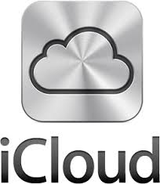

| NOME DEL SERVIZIO |
IMMAGINE LOGO DEL SERVIZIO |
INDIRIZZO WEB DOVE RAGGIUNGERLO |
COSTO E SPAZIO DISPONIBILE |
| SKYDRIVE |
|
Clicca qui per raggiungere Skydrive |
Skydrive è il secondo servizio piu conosciuto dopo google drive, ed è pure gratis, con 7 gb a disposizione. |
| iCLOUD |
 |
Clicca qui per raggiungere iCloud |
iCloud è stato realizzato da ios, è gratis e funziona sia su pc che su mac con 5 gb a disposizione |
| SUGARSYNC |
|
Clicca qui per raggiungere Sugarsync |
Sugarsync è un servizio simile ai piu famosi come dropbox per salvare dati online, ed è gratuito |